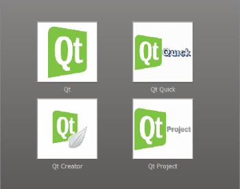

Drill Down Example

When running the example application, a user can retrieve information about each item by clicking the corresponding image. The application pops up an information window displaying the data, and allows the users to alter the description as well as the image. The main view will be updated when the users submit their changes.
The example consists of three classes:
ImageItemis a custom graphics item class used to display the images.Viewis the main application widget allowing the user to browse through the various items.InformationWindowdisplays the requested information, allowing the users to alter it and submit their changes to the database.
We will first take a look at the InformationWindow class to see how you can read and modify data from a database. Then we will review the main application widget, i.e., the View class, and the associated ImageItem class.
InformationWindow Class Definition
The InformationWindow class is a custom widget inheriting QWidget:
class InformationWindow : public QDialog { Q_OBJECT public: InformationWindow(int id, QSqlRelationalTableModel *items, QWidget *parent = 0); int id(); signals: void imageChanged(int id, const QString &fileName);
When we create an information window, we pass the associated item ID, a parent, and a pointer to the database, to the constructor. We will use the database pointer to populate our window with data, while passing the parent parameter on to the base class. The ID is stored for future reference.
Once a window is created, we will use the public id() function to locate it whenever information for the given location is requested. We will also use the ID to update the main application widget when the users submit their changes to the database, i.e., we will emit a signal carrying the ID and file name as parameters whenever the users changes the associated image.
private slots: void revert(); void submit(); void enableButtons(bool enable = true);
Since we allow the users to alter some of the data, we must provide functionality for reverting and submitting their changes. The enableButtons() slot is provided for convenience to enable and disable the various buttons when required.
private: void createButtons(); int itemId; QString displayedImage; QComboBox *imageFileEditor; QLabel *itemText; QTextEdit *descriptionEditor; QPushButton *closeButton; QPushButton *submitButton; QPushButton *revertButton; QDialogButtonBox *buttonBox; QDataWidgetMapper *mapper; };
The createButtons() function is also a convenience function, provided to simplify the constructor. As mentioned above we store the item ID for future reference. We also store the name of the currently displayed image file to be able to determine when to emit the imageChanged() signal.
The information window uses the QLabel class to display the name of an item. The associated image file is displayed using a QComboBox instance while the description is displayed using QTextEdit. In addition, the window has three buttons to control the data flow and whether the window is shown or not.
Finally, we declare a mapper. The QDataWidgetMapper class provides mapping between a section of a data model to widgets. We will use the mapper to extract data from the given database, updating the database whenever the user modifies the data.
InformationWindow Class Implementation
The constructor takes three arguments: an item ID, a database pointer and a parent widget. The database pointer is actually a pointer to a QSqlRelationalTableModel object providing an editable data model (with foreign key support) for our database table.
InformationWindow::InformationWindow(int id, QSqlRelationalTableModel *items, QWidget *parent) : QDialog(parent) { QLabel *itemLabel = new QLabel(tr("Item: ")); QLabel *descriptionLabel = new QLabel(tr("Description: ")); QLabel *imageFileLabel = new QLabel(tr("Image file: ")); createButtons(); itemText = new QLabel; descriptionEditor = new QTextEdit;
First we create the various widgets required to display the data contained in the database. Most of the widgets are created in a straight forward manner. But note the combobox displaying the name of the image file:
imageFileEditor = new QComboBox;
imageFileEditor->setModel(items->relationModel(1));
imageFileEditor->setModelColumn(items->relationModel(1)->fieldIndex("file"));
In this example, information about the items are stored in a database table called "items". When creating the model, we will use a foreign key to establish a relation between this table and a second data base table, "images", containing the names of the available image files. We will get back to how this is done when reviewing the View class. The rationale for creating such a relation though, is that we want to ensure that the user only can choose between predefined image files.
The model corresponding to the "images" database table, is available through the QSqlRelationalTableModel's relationModel() function, requiring the foreign key (in this case the "imagefile" column number) as argument. We use QComboBox's setModel() function to make the combobox use the "images" model. And, since this model has two columns ("itemid" and "file"), we also specify which column we want to be visible using the QComboBox::setModelColumn() function.
mapper = new QDataWidgetMapper(this);
mapper->setModel(items);
mapper->setSubmitPolicy(QDataWidgetMapper::ManualSubmit);
mapper->setItemDelegate(new QSqlRelationalDelegate(mapper));
mapper->addMapping(imageFileEditor, 1);
mapper->addMapping(itemText, 2, "text");
mapper->addMapping(descriptionEditor, 3);
mapper->setCurrentIndex(id);
Then we create the mapper. The QDataWidgetMapper class allows us to create data-aware widgets by mapping them to sections of an item model.
The addMapping() function adds a mapping between the given widget and the specified section of the model. If the mapper's orientation is horizontal (the default) the section is a column in the model, otherwise it is a row. We call the setCurrentIndex() function to initialize the widgets with the data associated with the given item ID. Every time the current index changes, all the widgets are updated with the contents from the model.
We also set the mapper's submit policy to QDataWidgetMapper::ManualSubmit. This means that no data is submitted to the database until the user expliclity requests a submit (the alternative is QDataWidgetMapper::AutoSubmit, automatically submitting changes when the corresponding widget looses focus). Finally, we specify the item delegate the mapper view should use for its items. The QSqlRelationalDelegate class represents a delegate that unlike the default delegate, enables combobox functionality for fields that are foreign keys into other tables (like "imagefile" in our "items" table).
connect(descriptionEditor, SIGNAL(textChanged()),
this, SLOT(enableButtons()));
connect(imageFileEditor, SIGNAL(currentIndexChanged(int)),
this, SLOT(enableButtons()));
QFormLayout *formLayout = new QFormLayout;
formLayout->addRow(itemLabel, itemText);
formLayout->addRow(imageFileLabel, imageFileEditor);
formLayout->addRow(descriptionLabel, descriptionEditor);
QVBoxLayout *layout = new QVBoxLayout;
layout->addLayout(formLayout);
layout->addWidget(buttonBox);
setLayout(layout);
itemId = id;
displayedImage = imageFileEditor->currentText();
setWindowFlags(Qt::Window);
enableButtons(false);
setWindowTitle(itemText->text());
}
Finally, we connect the "something's changed" signals in the editors to our custom enableButtons() slot, enabling the users to either submit or revert their changes. We add all the widgets into a layout, store the item ID and the name of the displayed image file for future reference, and set the window title and initial size.
Note that we also set the Qt::Window window flag to indicate that our widget is in fact a window, with a window system frame and a title bar.
int InformationWindow::id() { return itemId; }
When a window is created, it is not deleted until the main application exits (i.e., if the user closes the information window, it is only hidden). For this reason we do not want to create more than one InformationWindow object for each item, and we provide the public id() function to be able to determine whether a window already exists for a given location when the user requests information about it.
void InformationWindow::revert() { mapper->revert(); enableButtons(false); }
The revert() slot is triggered whenever the user hits the Revert button.
Since we set the QDataWidgetMapper::ManualSubmit submit policy, none of the user's changes are written back to the model unless the user expliclity choose to submit all of them. Nevertheless, we can use the QDataWidgetMapper's revert() slot to reset the editor widgets, repopulating all widgets with the current data of the model.
void InformationWindow::submit() { QString newImage(imageFileEditor->currentText()); if (displayedImage != newImage) { displayedImage = newImage; emit imageChanged(itemId, newImage); } mapper->submit(); mapper->setCurrentIndex(itemId); enableButtons(false); }
Likewise, the submit() slot is triggered whenever the users decide to submit their changes by pressing the Submit button.
We use QDataWidgetMapper's submit() slot to submit all changes from the mapped widgets to the model, i.e. to the database. For every mapped section, the item delegate will then read the current value from the widget and set it in the model. Finally, the model's submit() function is invoked to let the model know that it should submit whatever it has cached to the permanent storage.
Note that before any data is submitted, we check if the user has chosen another image file using the previously stored displayedImage variable as reference. If the current and stored file names differ, we store the new file name and emit the imageChanged() signal.
void InformationWindow::createButtons() { closeButton = new QPushButton(tr("&Close")); revertButton = new QPushButton(tr("&Revert")); submitButton = new QPushButton(tr("&Submit")); closeButton->setDefault(true); connect(closeButton, SIGNAL(clicked()), this, SLOT(close())); connect(revertButton, SIGNAL(clicked()), this, SLOT(revert())); connect(submitButton, SIGNAL(clicked()), this, SLOT(submit()));
The createButtons() function is provided for convenience, i.e., to simplify the constructor.
We make the Close button the default button, i.e., the button that is pressed when the user presses Enter, and connect its clicked() signal to the widget's close() slot. As mentioned above closing the window only hides the widget; it is not deleted. We also connect the Submit and Revert buttons to the corresponding submit() and revert() slots.
buttonBox = new QDialogButtonBox(this);
buttonBox->addButton(submitButton, QDialogButtonBox::AcceptRole);
buttonBox->addButton(revertButton, QDialogButtonBox::ResetRole);
buttonBox->addButton(closeButton, QDialogButtonBox::RejectRole);
}
The QDialogButtonBox class is a widget that presents buttons in a layout that is appropriate to the current widget style. Dialogs like our information window, typically present buttons in a layout that conforms to the interface guidelines for that platform. Invariably, different platforms have different layouts for their dialogs. QDialogButtonBox allows us to add buttons, automatically using the appropriate layout for the user's desktop environment.
Most buttons for a dialog follow certain roles. We give the Submit and Revert buttons the reset role, i.e., indicating that pressing the button resets the fields to the default values (in our case the information contained in the database). The reject role indicates that clicking the button causes the dialog to be rejected. On the other hand, since we only hide the information window, any changes that the user has made will be preserved until the user explicitly reverts or submits them.
void InformationWindow::enableButtons(bool enable) { revertButton->setEnabled(enable); submitButton->setEnabled(enable); }
The enableButtons() slot is called to enable the buttons whenever the user changes the presented data. Likewise, when the user chooses to submit the changes, the buttons are disabled to indicate that the current data is stored in the database.
This completes the InformationWindow class. Let's take a look at how we have used it in our example application.
View Class Definition
The View class represents the main application window and inherits QGraphicsView:
class View : public QGraphicsView { Q_OBJECT public: View(const QString &items, const QString &images, QWidget *parent = 0); protected: void mouseReleaseEvent(QMouseEvent *event) Q_DECL_OVERRIDE; private slots: void updateImage(int id, const QString &fileName);
The QGraphicsView class is part of the Graphics View Framework which we will use to display the images. To be able to respond to user interaction by displaying the appropriate information window when the image is clicked, we reimplement QGraphicsView's mouseReleaseEvent() function.
Note that the constructor expects the names of two database tables: One containing the detailed information about the items, and another containing the names of the available image files. We also provide a private updateImage() slot to catch InformationWindow's imageChanged() signal that is emitted whenever the user changes an image associated with the item.
private: void addItems(); InformationWindow* findWindow(int id); void showInformation(ImageItem *image); QGraphicsScene *scene; QList<InformationWindow *> informationWindows;
The addItems() function is a convenience function provided to simplify the constructor. It is called only once, creating the various items and adding them to the view.
The findWindow() function, on the other hand, is frequently used. It is called from the showInformation() function to detemine whether a window is already created for the given item (whenever we create an InformationWindow object, we store a reference to it in the informationWindows list). The latter function is in turn called from our custom mouseReleaseEvent() implementation.
QSqlRelationalTableModel *itemTable;
};
Finally, we declare a QSqlRelationalTableModel pointer. As previously mentioned, the QSqlRelationalTableModel class provides an editable data model with foreign key support. There are a couple of things you should keep in mind when using the QSqlRelationalTableModel class: The table must have a primary key declared and this key cannot contain a relation to another table, that is, it cannot be a foreign key. Also note that if a relational table contains keys that refer to non-existent rows in the referenced table, the rows containing the invalid keys will not be exposed through the model. It is the user's or the database's responsibility to maintain referential integrity.
View Class Implementation
Although the constructor requests the names of both the table containing office details as well as the table containing the names of the available image files, we only have to create a QSqlRelationalTableModel object for the "items" table:
View::View(const QString &items, const QString &images, QWidget *parent) : QGraphicsView(parent) { itemTable = new QSqlRelationalTableModel(this); itemTable->setTable(items); itemTable->setRelation(1, QSqlRelation(images, "itemid", "file")); itemTable->select();
The reason is that once we have a model with the item details, we can create a relation to the available image files using QSqlRelationalTableModel's setRelation() function. This function creates a foreign key for the given model column. The key is specified by the provided QSqlRelation object constructed by the name of the table the key refers to, the field the key is mapping to and the field that should be presented to the user.
Note that setting the table only specifies which table the model operates on, i.e., we must explicitly call the model's select() function to populate our model.
scene = new QGraphicsScene(this);
scene->setSceneRect(0, 0, 465, 365);
setScene(scene);
addItems();
setMinimumSize(470, 370);
setMaximumSize(470, 370);
QLinearGradient gradient(QPointF(0, 0), QPointF(0, 370));
gradient.setColorAt(0, QColor("#868482"));
gradient.setColorAt(1, QColor("#5d5b59"));
setBackgroundBrush(gradient);
}
Then we create the contents of our view, i.e., the scene and its items. The labels are regular QGraphicsTextItem objects, whereas the images are instances of the ImageItem class, derived from QGraphicsPixmapItem. We will get back to this shortly when reviewing the addItems() function.
Finally, we set the main application widget's size constraints and window title.
void View::addItems() { int itemCount = itemTable->rowCount(); int imageOffset = 150; int leftMargin = 70; int topMargin = 40; for (int i = 0; i < itemCount; i++) { ImageItem *image; QGraphicsTextItem *label; QSqlRecord record = itemTable->record(i); int id = record.value("id").toInt(); QString file = record.value("file").toString(); QString item = record.value("itemtype").toString(); int columnOffset = ((i % 2) * 37); int x = ((i % 2) * imageOffset) + leftMargin + columnOffset; int y = ((i / 2) * imageOffset) + topMargin; image = new ImageItem(id, QPixmap(":/" + file)); image->setData(0, i); image->setPos(x, y); scene->addItem(image); label = scene->addText(item); label->setDefaultTextColor(QColor("#d7d6d5")); QPointF labelOffset((120 - label->boundingRect().width()) / 2, 120.0); label->setPos(QPointF(x, y) + labelOffset); } }
The addItems() function is called only once when creating the main application window. For each row in the database table, we first extract the corresponding record using the model's record() function. The QSqlRecord class encapsulates both the functionality and characteristics of a database record, and supports adding and removing fields as well as setting and retrieving field values. The QSqlRecord::value() function returns the value of the field with the given name or index as a QVariant object.
For each record, we create a label item as well as an image item, calculate their position and add them to the scene. The image items are represented by instances of the ImageItem class. The reason we must create a custom item class is that we want to catch the item's hover events, animating the item when the mouse cursor is hovering over the image (by default, no items accept hover events). Please see the Graphics View Framework documentation and the Graphics View Examples for more details.
void View::mouseReleaseEvent(QMouseEvent *event) { if (QGraphicsItem *item = itemAt(event->pos())) { if (ImageItem *image = qgraphicsitem_cast<ImageItem *>(item)) showInformation(image); } QGraphicsView::mouseReleaseEvent(event); }
We reimplement QGraphicsView's mouseReleaseEvent() event handler to respond to user interaction. If the user clicks any of the image items, this function calls the private showInformation() function to pop up the associated information window.
The Graphics View Framework provides the qgraphicsitem_cast() function to determine whether the given QGraphicsItem instance is of a given type. Note that if the event is not related to any of our image items, we pass it on to the base class implementation.
void View::showInformation(ImageItem *image) { int id = image->id(); if (id < 0 || id >= itemTable->rowCount()) return; InformationWindow *window = findWindow(id); if (window && window->isVisible()) { window->raise(); window->activateWindow(); } else if (window && !window->isVisible()) { window->show(); } else { InformationWindow *window; window = new InformationWindow(id, itemTable, this); connect(window, SIGNAL(imageChanged(int,QString)), this, SLOT(updateImage(int,QString))); window->move(pos() + QPoint(20, 40)); window->show(); informationWindows.append(window); } }
The showInformation() function is given an ImageItem object as argument, and starts off by extracting the item's item ID. Then it determines if there already is created an information window for this location. If it is, and the window is visible, it ensures that the window is raised to the top of the widget stack and activated. If the window exists but is hidden, calling its show() slot gives the same result.
If no window for the given location exists, we create one by passing the item ID, a pointer to the model, and our view as a parent, to the InformationWindow constructor. Note that we connect the information window's imageChanged() signal to this widget's updateImage() slot, before we give it a suitable position and add it to the list of existing windows.
void View::updateImage(int id, const QString &fileName) { QList<QGraphicsItem *> items = scene->items(); while(!items.empty()) { QGraphicsItem *item = items.takeFirst(); if (ImageItem *image = qgraphicsitem_cast<ImageItem *>(item)) { if (image->id() == id){ image->setPixmap(QPixmap(":/" +fileName)); image->adjust(); break; } } } }
The updateImage() slot takes an item ID and the name of an image file as arguments. It filters out the image items, and updates the one that correspond to the given item ID, with the provided image file.
InformationWindow* View::findWindow(int id) { QList<InformationWindow*>::iterator i, beginning, end; beginning = informationWindows.begin(); end = informationWindows.end(); for (i = beginning; i != end; ++i) { InformationWindow *window = (*i); if (window && (window->id() == id)) return window; } return 0; }
The findWindow() function simply searches through the list of existing windows, returning a pointer to the window that matches the given item ID, or 0 if the window doesn't exists.
Finally, let's take a quick look at our custom ImageItem class:
ImageItem Class Definition
The ImageItem class is provided to facilitate animation of the image items. It inherits QGraphicsPixmapItem and reimplements its hover event handlers:
class ImageItem : public QObject, public QGraphicsPixmapItem { Q_OBJECT public: ImageItem(int id, const QPixmap &pixmap, QGraphicsItem *parent = 0); void adjust(); int id(); protected: void hoverEnterEvent(QGraphicsSceneHoverEvent *event) Q_DECL_OVERRIDE; void hoverLeaveEvent(QGraphicsSceneHoverEvent *event) Q_DECL_OVERRIDE; private slots: void setFrame(int frame); void updateItemPosition(); private: QTimeLine timeLine; int recordId; double z; };
In addition, we implement a public id() function to be able to identify the associated location and a public adjust() function that can be called to ensure that the image item is given the preferred size regardless of the original image file.
The animation is implemented using the QTimeLine class together with the event handlers and the private setFrame() slot: The image item will expand when the mouse cursor hovers over it, returning back to its original size when the cursor leaves its borders.
Finally, we store the item ID that this particular record is associated with as well as a z-value. In the Graphics View Framework, an item's z-value determines its position in the item stack. An item of high z-value will be drawn on top of an item with a lower z-value if they share the same parent item. We also provide an updateItemPosition() function to refresh the view when required.
ImageItem Class Implementation
The ImageItem class is really only a QGraphicsPixmapItem with some additional features, i.e., we can pass most of the constructor's arguments (the pixmap, parent and scene) on to the base class constructor:
ImageItem::ImageItem(int id, const QPixmap &pixmap, QGraphicsItem *parent) : QGraphicsPixmapItem(pixmap, parent) { recordId = id; setAcceptHoverEvents(true); timeLine.setDuration(150); timeLine.setFrameRange(0, 150); connect(&timeLine, SIGNAL(frameChanged(int)), this, SLOT(setFrame(int))); connect(&timeLine, SIGNAL(finished()), this, SLOT(updateItemPosition())); adjust(); }
Then we store the ID for future reference, and ensure that our image item will accept hover events. Hover events are delivered when there is no current mouse grabber item. They are sent when the mouse cursor enters an item, when it moves around inside the item, and when the cursor leaves an item. As we mentioned earlier, none of the Graphics View Framework's items accept hover event's by default.
The QTimeLine class provides a timeline for controlling animations. Its duration property holds the total duration of the timeline in milliseconds. By default, the time line runs once from the beginning and towards the end. The QTimeLine::setFrameRange() function sets the timeline's frame counter; when the timeline is running, the frameChanged() signal is emitted each time the frame changes. We set the duration and frame range for our animation, and connect the time line's frameChanged() and finished() signals to our private setFrame() and updateItemPosition() slots.
Finally, we call adjust() to ensure that the item is given the preferred size.
void ImageItem::hoverEnterEvent(QGraphicsSceneHoverEvent * /*event*/) { timeLine.setDirection(QTimeLine::Forward); if (z != 1.0) { z = 1.0; updateItemPosition(); } if (timeLine.state() == QTimeLine::NotRunning) timeLine.start(); } void ImageItem::hoverLeaveEvent(QGraphicsSceneHoverEvent * /*event*/) { timeLine.setDirection(QTimeLine::Backward); if (z != 0.0) z = 0.0; if (timeLine.state() == QTimeLine::NotRunning) timeLine.start(); }
Whenever the mouse cursor enters or leaves the image item, the corresponding event handlers are triggered: We first set the time line's direction, making the item expand or shrink, respectively. Then we alter the item's z-value if it is not already set to the expected value.
In the case of hover enter events, we immediately update the item's position since we want the item to appear on top of all other items as soon as it starts expanding. In the case of hover leave events, on the other hand, we postpone the actual update to achieve the same result. But remember that when we constructed our item, we connected the time line's finished() signal to the updateItemPosition() slot. In this way the item is given the correct position in the item stack once the animation is completed. Finally, if the time line is not already running, we start it.
void ImageItem::setFrame(int frame) { adjust(); QPointF center = boundingRect().center(); setTransform(QTransform::fromTranslate(center.x(), center.y()), true); setTransform(QTransform::fromScale(1 + frame / 330.0, 1 + frame / 330.0), true); setTransform(QTransform::fromTranslate(-center.x(), -center.y()), true); }
When the time line is running, it triggers the setFrame() slot whenever the current frame changes due to the connection we created in the item constructor. It is this slot that controls the animation, expanding or shrinking the image item step by step.
We first call the adjust() function to ensure that we start off with the item's original size. Then we scale the item with a factor depending on the animation's progress (using the frame parameter). Note that by default, the transformation will be relative to the item's top-left corner. Since we want the item to be transformed relative to its center, we must translate the coordinate system before we scale the item.
In the end, only the following convenience functions remain:
void ImageItem::adjust() { QMatrix matrix; matrix.scale(120/ boundingRect().width(), 120/ boundingRect().height()); setMatrix(matrix); } int ImageItem::id() { return recordId; } void ImageItem::updateItemPosition() { setZValue(z); }
The adjust() function defines and applies a transformation matrix, ensuring that our image item appears with the preferred size regardless of the size of the source image. The id() function is trivial, and is simply provided to be able to identify the item. In the updateItemPosition() slot we call the QGraphicsItem::setZValue() function, setting the elevation of the item.
Files:
- drilldown/imageitem.cpp
- drilldown/imageitem.h
- drilldown/informationwindow.cpp
- drilldown/informationwindow.h
- drilldown/view.cpp
- drilldown/view.h
- drilldown/main.cpp
- drilldown/drilldown.pro
- drilldown/drilldown.qrc
Images:
{kind=link}
{kind=link}
{kind=link}
{kind=link}